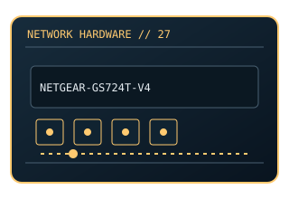

[ MODEL-SPECIFIC NETWORK HARDWARE ]
NETGEAR GS724T v4 24-Port Gigabit Smart Managed Pro Switch
24-port smart-managed Gigabit switch with SFP uplinks. This entry uses the labeled manufacturer model identifier and cites primary product/support documentation.

MODEL IDENTIFICATION: Match the complete model/part number and hardware revision on the item label to manufacturer documentation. Do not apply this entry to near-name variants.
Exact specifications and compatibility
| Cataloged model | NETGEAR GS724T v4 24-Port Gigabit Smart Managed Pro Switch |
|---|---|
| Dedicated subcategory | Managed switches |
| Bus / host interface | Rackmount managed Ethernet switch. |
| Ports / physical interfaces | 24 × 10/100/1000BASE-T and 2 × dedicated SFP slots; non-PoE. |
| PHY, radio or protocol | Managed Layer 2 Ethernet features including VLAN/QoS; functions depend on firmware. |
| PoE | No PoE input or PoE output is documented for this product. |
| Link-rate vs throughput | 1Gb/s per RJ-45 port; nominal interface rate only, not measured payload. Link rates are nominal negotiated/PHY specifications, not measured application throughput; no measured specimen result is claimed. |
| Firmware / driver support | NETGEAR firmware and configuration utility are model/revision dependent. |
| Compatibility checks | Confirm v4 hardware revision and current support status; match SFP speed and fiber type. |
Model-specific notes
GS724T revisions may differ; firmware is not interchangeable across generations.
Primary manufacturer sources
- NETGEAR GS724T official product specificationsManufacturer product specification or documentation for the exact model/family.
- Manufacturer support and compatibility resourcesFirmware, driver, compatibility, revision or support details; applicability may depend on the exact hardware revision and region.
Vendor maximum rates are not test results. Confirm regional variants, hardware revision and current support status with the manufacturer.